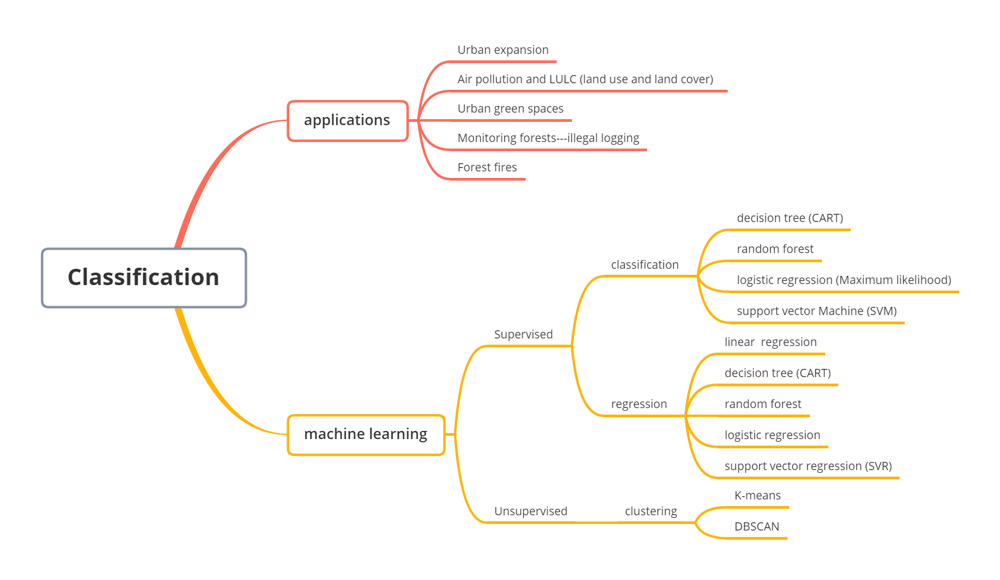
6 Week6 Classification I
6.1 Summary
6.1.1 Mind map
6.1.2 Applications of classified data
Monitoring forests —– illegal logging
The illegal logging case is very interesting, because illegal loggers use technical ways to avoid the monitoring of forests. When researchers classify the imagery data of forests, small logging areas are ignored because the resolution of imagery (250*250m) is larger than the size of logging areas. These illegal logging areas are hidden in the picture and not able to be detected. Therefore, the high resolution data is important in the classification problems.
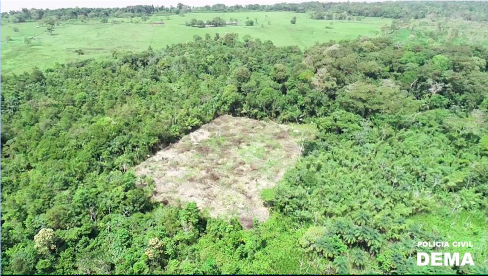
6.1.3 Machine learning methods
6.1.3.1 Decision tree (CART)
It can apply in both classification and regression problem, which is a binary tree. CART uses the Gini coefficient to make splits, and it represents the model’s impurity. The smaller the Gini coefficient indicates the lower the impurity, and the better outputs.
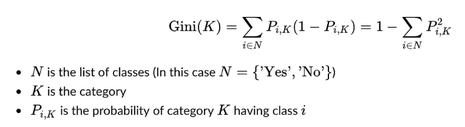
Classification
The predicted values are classified into two or more, and they are discrete.
The example of decision tree:
Should I take CASA0023?
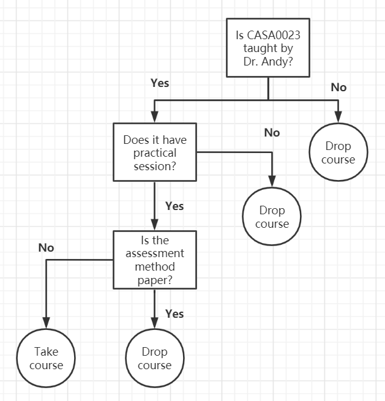
Regression
The predicted values are continuous, like housing price, GCSE scores.
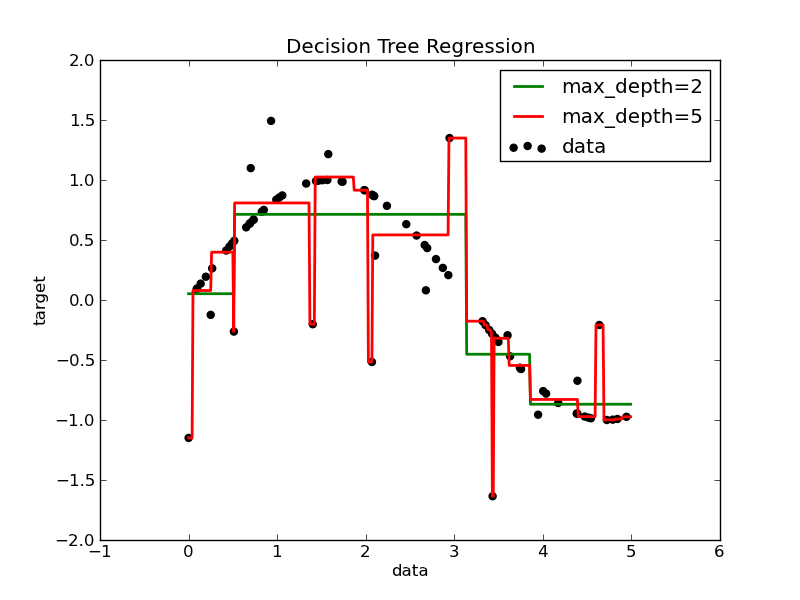
Overfitting
When the max depth of tree is high (red line in previous figure), the tree learn too fine details, so it casues overfitting problems.
Two ways to avoid overfitting:
limit how trees grow (eg. a minimum number of pixels in a leaf, 20 is often used)
Weakest link pruning (with tree score)
Tree score = SSR (The sum of squared residuals)+ tree penalty (alpha) * T (number of leaves)
How to do in code?
limit number of leaves in each tree
change Alpha
Hyperparameter-tuning
It is a process that finds the best parameter (Alpha in Decision Tree) of model in machine learning.
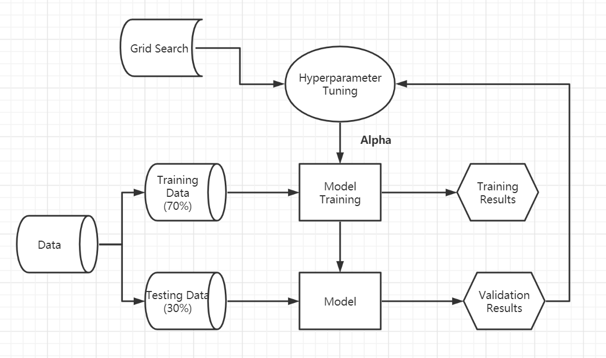
6.1.3.2 Random forest
It is made up of many decision trees. It reduces the risk of overfitting because it make decision tree from random number of variables (never all of them), and take a random subset of variables again.
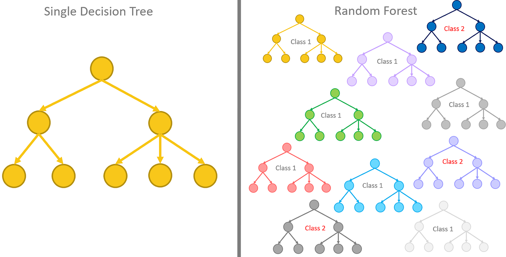
Bootstrapping is re-sampling and replacing data to make a decision.

6.1.3.3 Support Vector Machine (SVM)
This algorithm is to find a hyperplane in a N-dimensional space that can classify all data. It introduces in the framework of structural risk minimization (SRM).

SVM in 3D uses a plane instead of a line when there are more than two datasets.
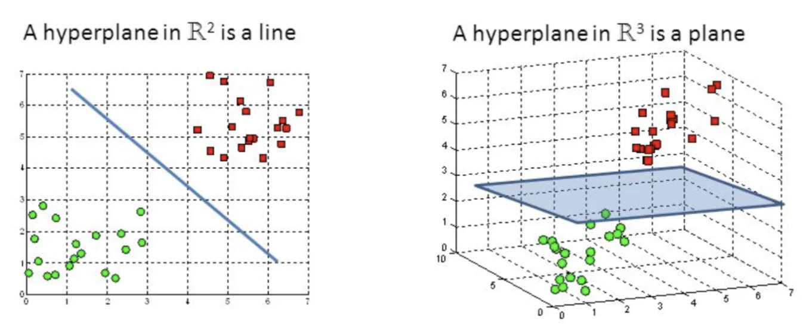
Hyperparameter-tuning in SVM
Type of kernel (rbf, poly, linear, sigmoid)
C controls training data and decision boundary maximisation plus margin errors
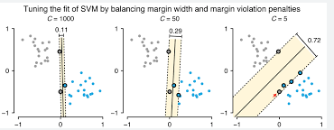
- Gamma (or Sigma) control radius for classified points
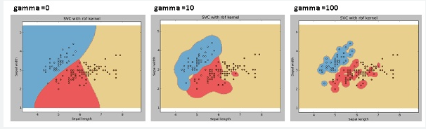
6.1.4 How image classification works?
Image classification turn every pixel in the image into one pre-defined categorical classification. The following picture shows how computer see in image . In remote sensing, if the pixel values are similar, and they probably are the same classes. The previous machine learning methods are used to classify these pixel values.
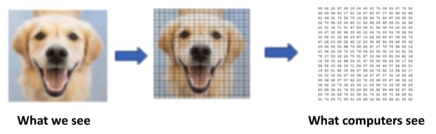
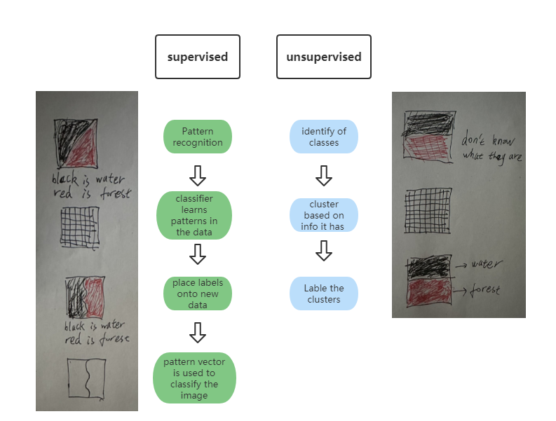
6.1.5 Classification on GEE
My case in Hong Kong code link: https://code.earthengine.google.com/0158a598d6dd7961dcfeacd9854ebff7
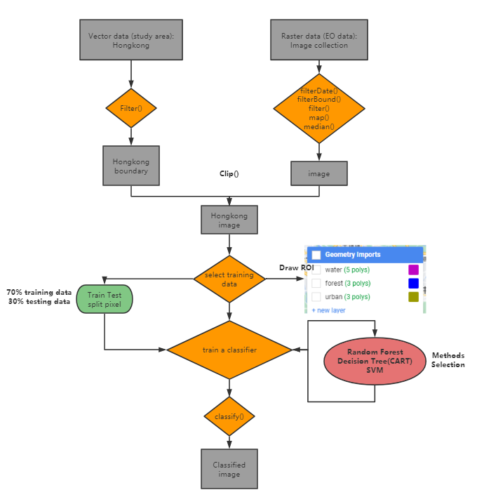
The left picture is the output from CART and it doesn’t split training and testing data. The right picture is the output from Random Forest, and the classifier was trained with 70% training pixels, and the training accuracy is 0.9980750721847931, the validation accuracy is 0.9956616052060737. The left output classify more forest areas than the right output.
In my case, class 1 is water, class 2 is forest, class 3 is urban.
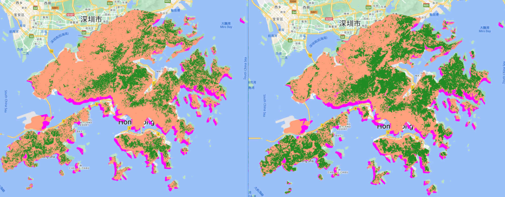
6.2 Application
Classification in GEE is one of the common application. When we are doing some of classification problems, what types of data and what methods for classification we are using are essential because it can directly affect the accuracy of our final output. This application part tries to review some studies that provide some information about data selection and method selection when doing classification tasks.
6.2.1 Case1: Land Cover Classification using Google Earth Engine and Random Forest Classifier—The Role of Image Composition
In our lecture, we learned median, mean and other method to reduce the data volume, but we don’t know how it affect the overall accuracy in the classification. This study explores the overall accuracy between time series data and temporal aggregation data in land cover classification. Phan, Kuch, and Lehnert (2020) found the time-series data has the highest overall accuracy (dataset 7 and 8), but the temporal aggregation data (dataset 2) also have an almost equally high overall accuracy in classification on the GEE. Therefore, they suggested we need to prioritize using temporal aggregation data (like median composite method) because the data volume is low, and it also can reduce the influence of cloud and snow in classification.
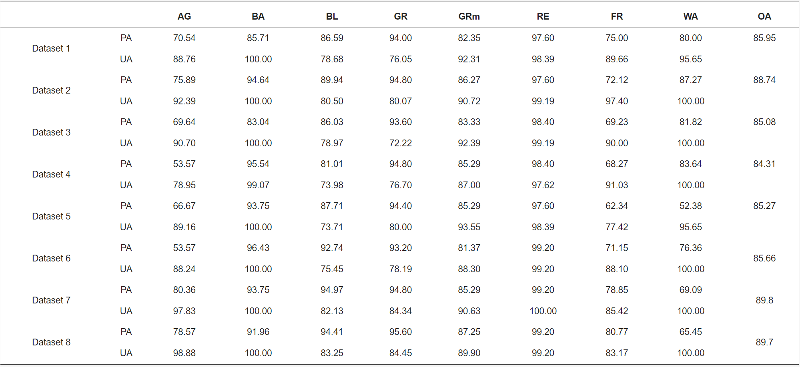
Data
The dataset 1 to 6 are the median composite of image collection, and dataset 7 to 8 are time series data.
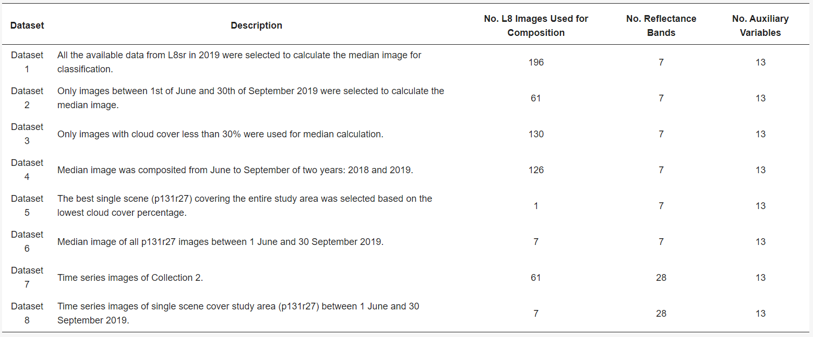
Method
The flow of method is similar to the practical we did. In this case, I noticed that they used very high resolution images, field work data, and other data in their training and testing data. This supports them to have a better classifier.
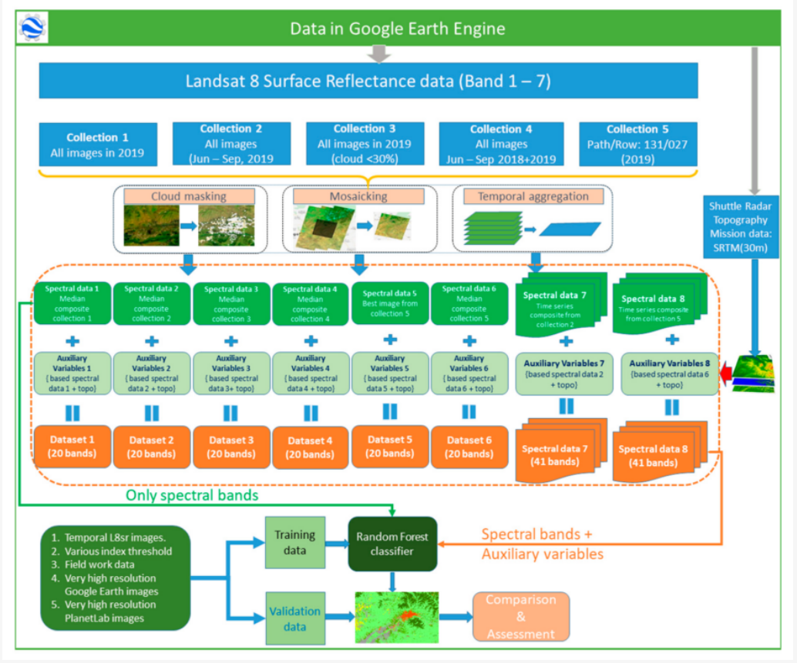
Output
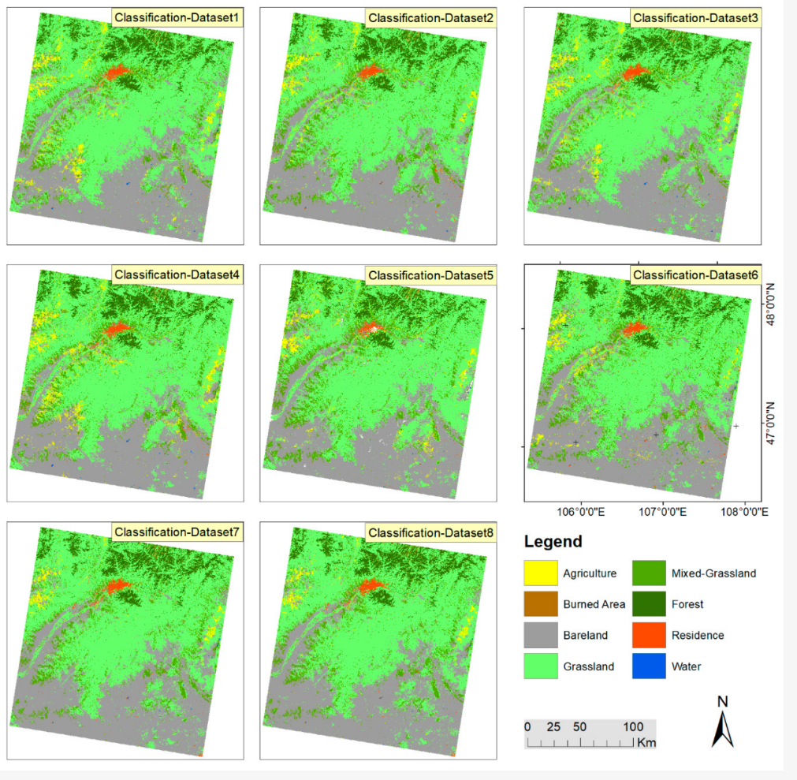
6.2.2 Case2: Analysis of Land Use and Land Cover Using Machine Learning Algorithms on Google Earth Engine for Munneru River Basin, India
This paper explore three machine learning algorithms including Random Forest (RF), Classification and Regression Tree (CART), and Support Vector Machine (SVM). Loukika, Keesara, and Sridhar (2021a) compared performance of three algorithms in the Land cover and land use classification problem. They found all of them have a high performance, but RF is outperformed. In addition, the dataset also have influence on the final performance. The Sentinel-2 dataset has a better performance than Landsat-8 dataset because Sentinel-2 (10m) has a higher resolution than Landsat-8 (30m), and Sentinel-2 dataset has red-edge bands. Therefore, they also found the band combinations and resolution will affect the accuracy of classification.
Data
| Year | Total number of images used in Landsat-8 | Total number of images used in Sentinel-2 |
|---|---|---|
| 2016 | 10 | 23 |
| 2018 | 15 | 44 |
| 2020 | 14 | 36 |
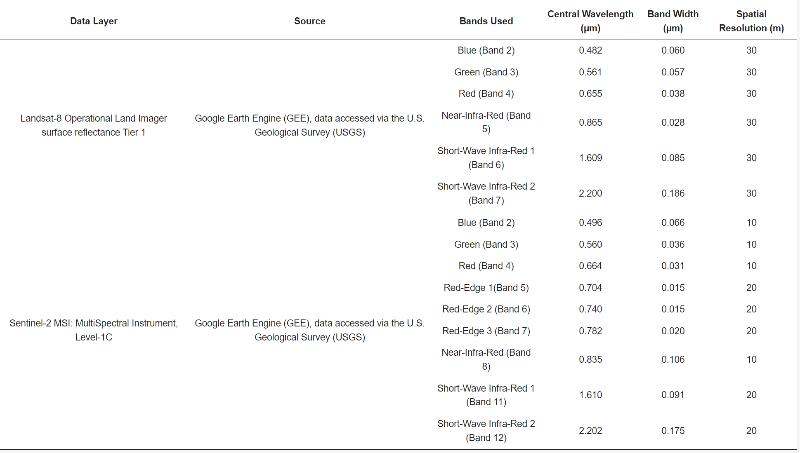
Method
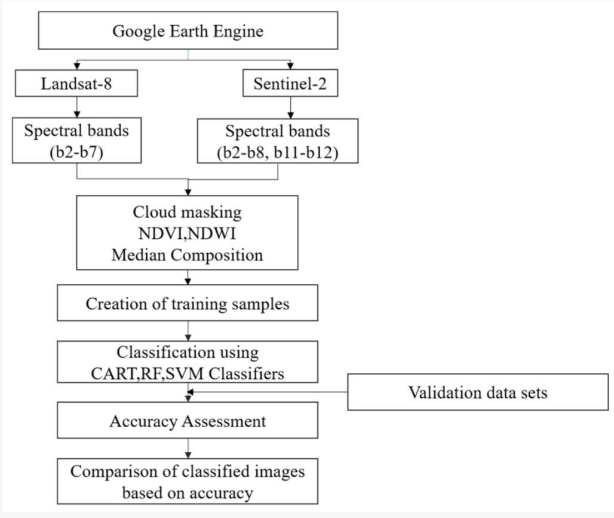
Output
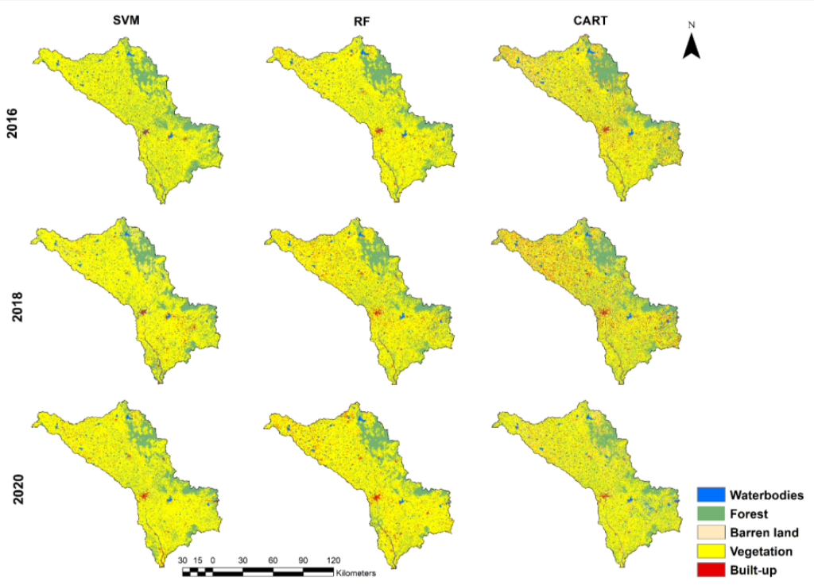
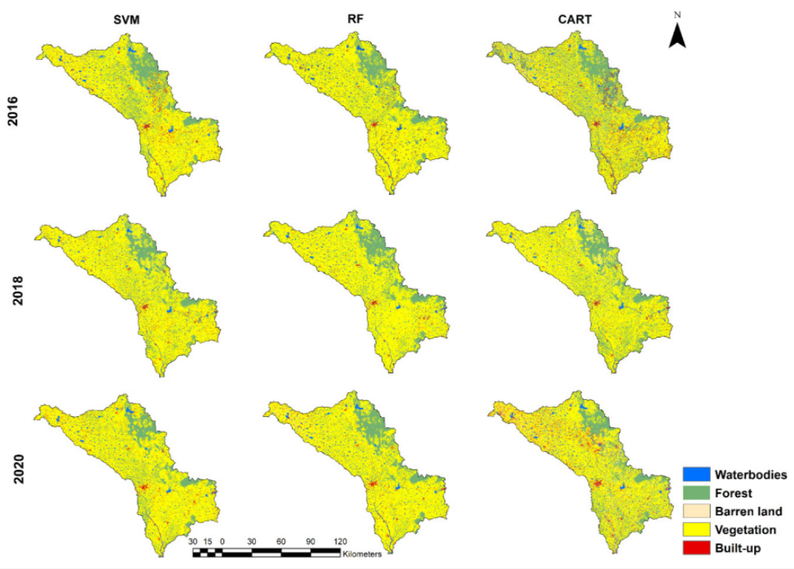
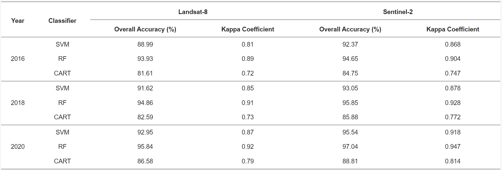
In the above table, all overall accuracy is relatively high in classification, so there are probably potential overfitting problems. Loukika, Keesara, and Sridhar (2021b) discussed some vegetation was misclassified as forest, and some parts of river was misclassified as barren or built-up. These misclassification probably is one of reason that causes overfitting, and it should be always notified in the classification.
6.3 Reflection
Hyperparameter-tuning is really useful in training a classifier because I have used this concept in training a regression model. It provides me a better R2 in my housing prediction case. Although the content and purpose are different, the method is similar. Both of them are tries to find the best parameter to build the model. For example, finding how many trees in RF can be the best classifier.
In the practical, my training accuracy and validation accuracy is so high, and it has overfitting problems. I think there are two reasons, the number of classes is small. Only three classes in my study area, and many area are misclassified into these three classes, in particular, forest and urban. The other reason probably is because I don’t pick various training data. Some of my training data I draw only have the short distance among them, this may cause they has the higher similarity or spatial autocorrelation. Therefore, I think I need to learn more methods that can help me avoid overfitting problems and selecting better training data.
The evaluation methods of classification was not mentioned in this week content, and this is also one of important component in the machine learning. In the application, two papers mentions user’s accuracy, producers’ accuracy, overall accuracy, and Kappa coefficient. These evaluation metrics that I need to explore in the following weeks.
The median composite method has been mentioned many times in previous weeks, but I don’t consider how it will affect the performance of classifier. In application case1, the performance of this method has been examined. I think I can use median composite method in my future analysis.
As for data selection, I think I need to find the better resolution data with a good combination of bands, which may provide me a better classification. As for method selection, I think it may depend on my research purposes and objectives. Like Andy mentioned in the class, high accuracy doesn’t always mean the good output. In my understanding, RF, CART, and SVM are machine learning methods in the remote sensing, but the deep learning nowadays are also highly applied into many fields. In the future, I want to explore how deep learning method, like CNN, RNN applied into remote sensing problems.